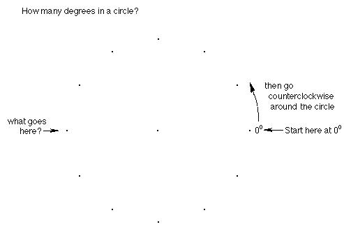
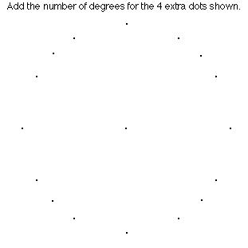
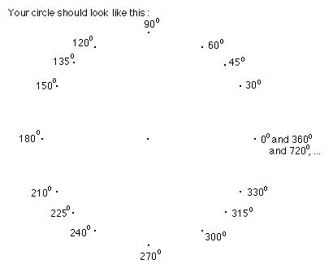
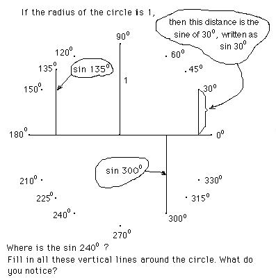
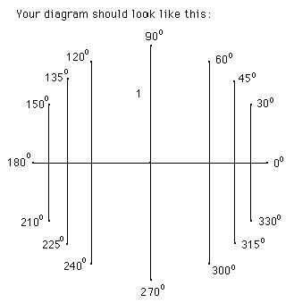
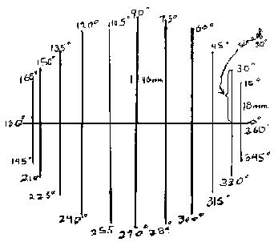
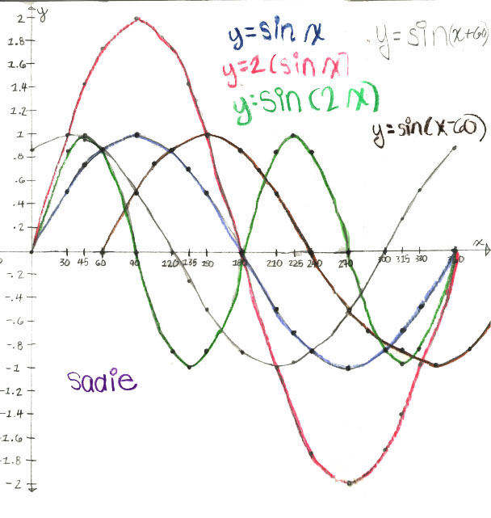
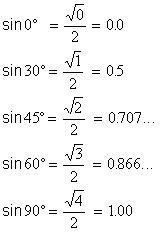
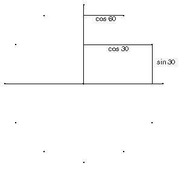

Ch. 1 Trig
from a circle
We'll start with a 12-dot circle.

Fill in the number of degrees at each point around the outside of the circle.


Draw the horizontal diameter.


Which of these is equal? Here are two: sin 30° = sin 150° . Make up more of these true statements. Fill up your paper with true statements like this.
If you have sin 30° = sin 330° you are almost right. The lengths are equal, but the sines are negative below the horizontal diameter, in other words between 180° and 360°. So sin 330° = -sin 30° . Now finish your list of true statements.
This
work by Sueanne is from “People’s Great Math” Jan.
’84 and is
used in the Japanese version of Don’s book “Changing Shapes
With Matrices”:
Sine
Waves...by Sueanne, 10 years old
|
 |
I saw some of these were the same and some were opposite: sin 60° = sin 120° sin 30° = -sin 330° sin 45° = -sin 315° sin 75° = -sin 285° sin 90° = -sin 270° sin 30° = sin 150° sin 15° = sin 165° sin 10° = sin 170° = sin(180°-10°) sin 5° = sin(180°- 5°)
|
Then I used ratios to figure out the sines (the length of line at 30, say divided by the length of the radius, so 23mm/46 mm = .5, the sine of 30=.5) and checked it on my calculator and recorded them on a chart:
|
x sin of x x+60 sin(x+60) 0 0.00 60 0.87 30 0.50 90 1.00 60 0.87 120 0.87 90 1.00 150 0.50 120 0.87 180 0.00 150 0.50 210 - 0.50 180 0.00 240 - 0.87 210 - 0.50 270 - 1.00 240 - 0.87 300 - 0.87 270 - 1.00 330 - 0.50 300 - 0.87 360 0.00 330 - 0.50 390 0.50 360 0.00 420 0.87 |
Using graph paper (see next page) I took the degrees and their sines and charted a sine wave (·). The degrees were x and the sine was y. The equation is y = sin x To shift the sine wave 60° to the left, I added 60 to the number of degrees which stood for x and wrote the sine of the new number next to it. Those numbers were charted on the graph paper. Equation: y= sin(x+60), (the x graph). To shift 60° to the right, subtract 60° from the number of degrees, figure out the sine of the new number and chart it on the graph. Equation: Y= sin(x-60) ( the o graph)."
|
The graphs below were similar to those done by Sueanne, but these were done by Sadie (taking Trig in the Fall of '00):

Notice:

Look at this simple pattern; it’s really easy to remember. You do want to memorize and know these values of the sine as decimals and in radical form.
Sueanne didn’t write about the cosine, but she worked on that next. To get the cosine, just find the lengths of the horizontal segments drawn to the vertical diameter as shown in the diagram below. The cosine of 30°, written as cos 30° and cos 60° are shown below. The word cosine comes from the word complement , which means two angles that add up to 90°. So cos 30° = sin 60° = 0.87 . By definition, the cosine is negative between 90° and 270°, and positive between 270° and 90°.

The values of the cosine and sine for arcs or angles from 0° to 360° are shown below:
x cos x sin x
0° 1 0
30° (Sqrt3)/2= 0.87 ½ = 0.5
45° (Sqrt2)/2 = 0.71 (Sqrt2)/2 = 0.71
60° ½ = 0.5 (Sqrt3)/2 = 0.87
90° 0 1
120° -½ = -.5 (Sqrt3)/2 = .87
135° -(Sqrt2)/2 = -.71 (Sqrt2)/2 = .71
150° - (Sqrt3)/2 = -.87 ½ = .5
180° -1 0
210° - (Sqrt3)/2 = -.87 - ½ = -.5
225° - (Sqrt2)/2 = -.71 -(Sqrt2)/2 = -.71
240° - ½ = -.5 -(Sqrt3)/2 = -.87
270° 0 -1
300° ½ = .5 - (Sqrt3)/2 = -.87
315° (Sqrt2)/2 = .71 -(Sqrt2)/2 = -.71
330° (Sqrt3)/2 = .87 - ½ = -.5
360° 1 0
So the value of the sine starts at 0 when the arc is 0°, and increases to 1 at 90° while the value of the cosine starts at 1 when the arc is 0°, and decreases to 0 at 90°
Don's 6 trig functions and identities, which also includes Geoffrey, age 11, graphs of the 6 trig functions. Geoffrey did these graphs from taking the data off the IES java applet at
http://www.ies.co.jp/math/java/trig/sixtrigfn/sixtrigfn.html